Class 07
Dept. of CE&E, Univ. of South Carolina
2026-09-14
Must:
| Type | Enforcement | Word |
|---|---|---|
| Standard | Required, mandatory, specifically prohibitive | “shall” or “shall not” |
| Guidance | Recommended; departure needs justification | “should” or “should not” |
| Option | Permitted; engineering judgment may be used | “may” or “may not” |
| Support | Explanation, examples, or background | statement without “shall”, “should”, “may” |
Section 4D.08, Par.1, A.1
Item A.1 of Paragraph 1 of Section 4D.08.
ITEMS
PARAGRAPH
numbered
SECTION
numbered
CHAPTER
letter: A-Z
PARTS
numbered: 1-9
Section 4D.08, Par.1, A.1
Item A.1 of Paragraph 1 of Section 4D.08.
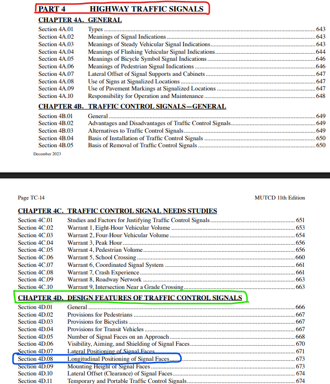
Section 4D.08, Par.1, A.1
Item A.1 of Paragraph 1 of Section 4D.08.
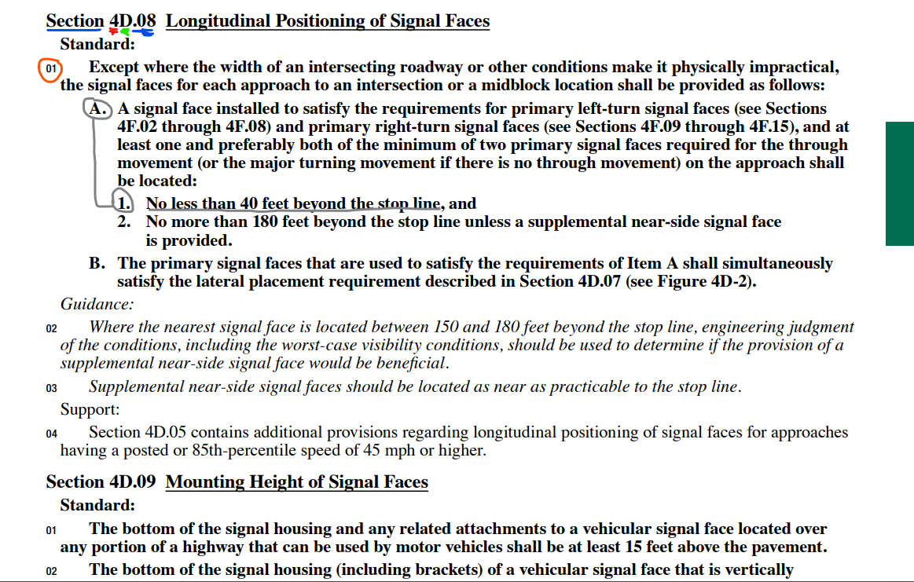
| MUTCD part | Main content |
|---|---|
| Part 1 | General principles and definitions |
| Part 2 | Signs |
| Part 3 | Markings |
| Part 4 | Highway traffic signals |
| Part 6 | Temporary traffic control/work zones |
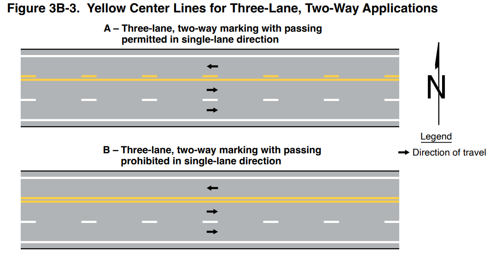
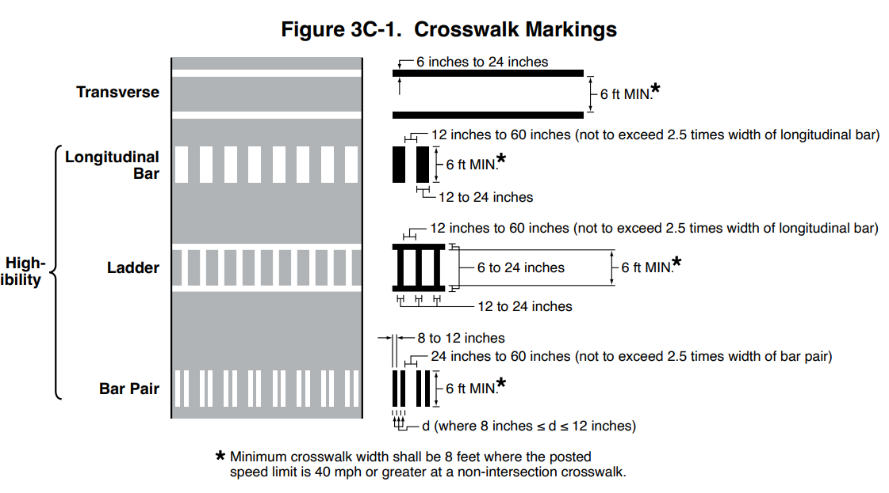
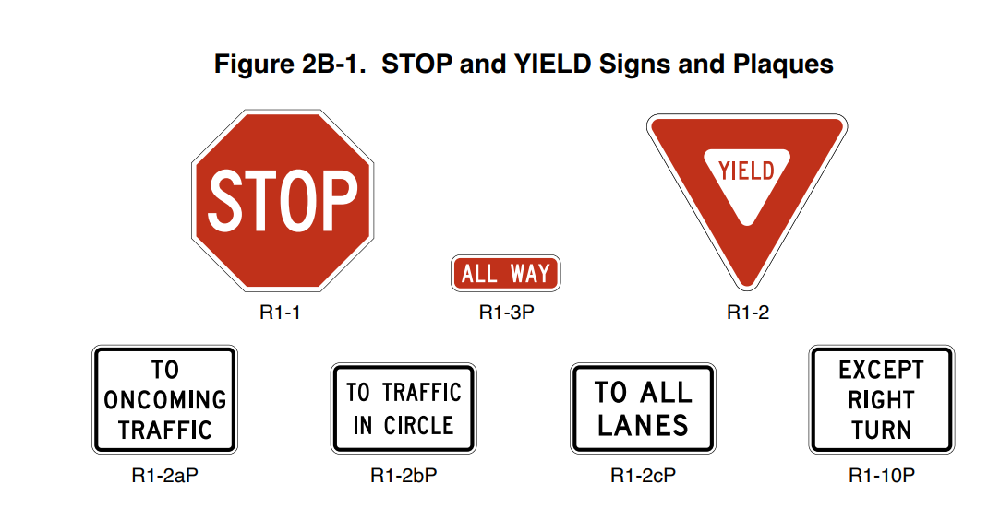
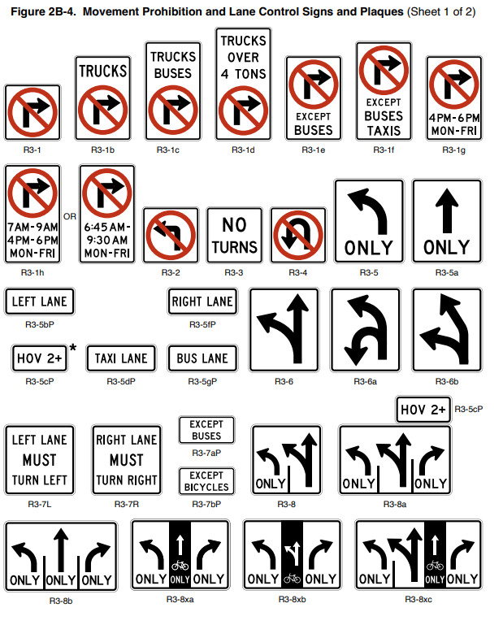
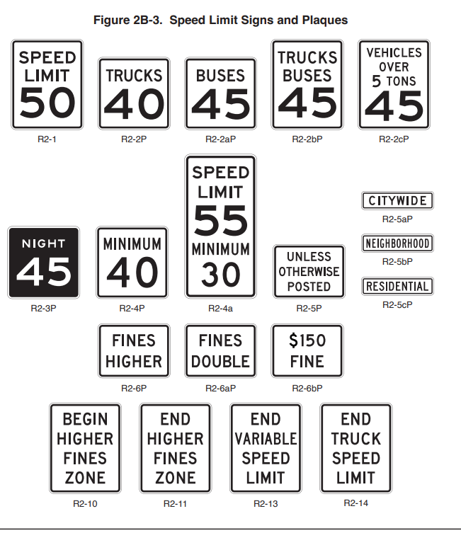
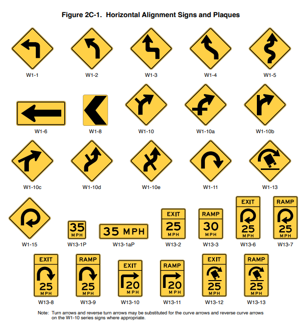
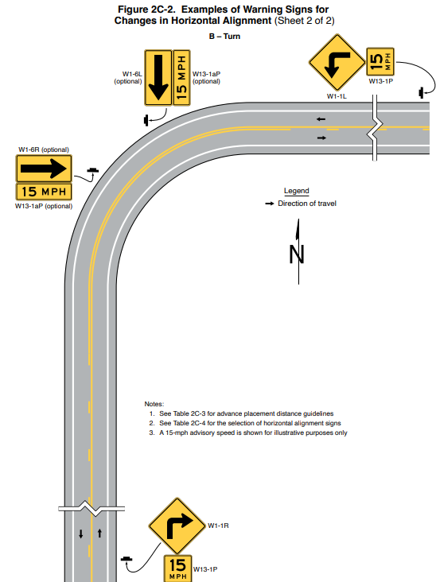
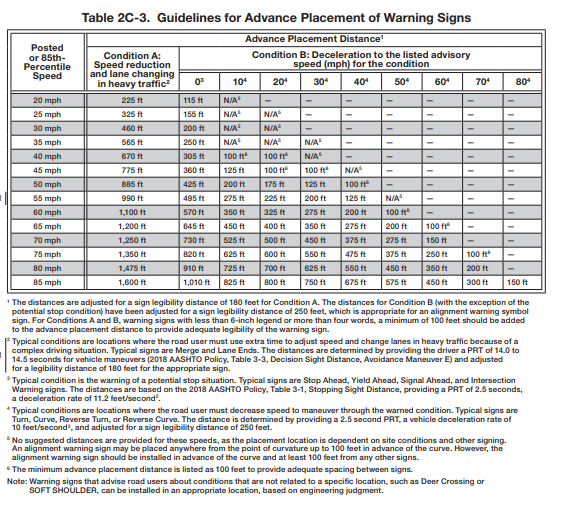
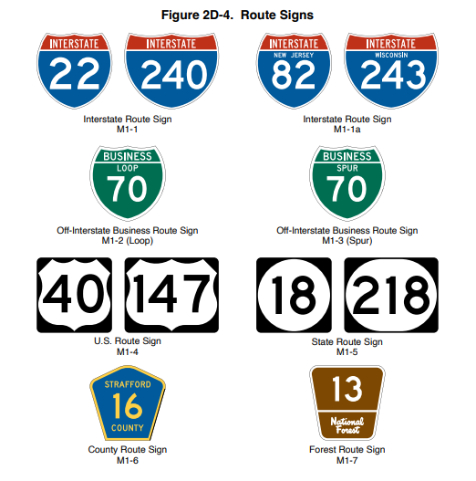
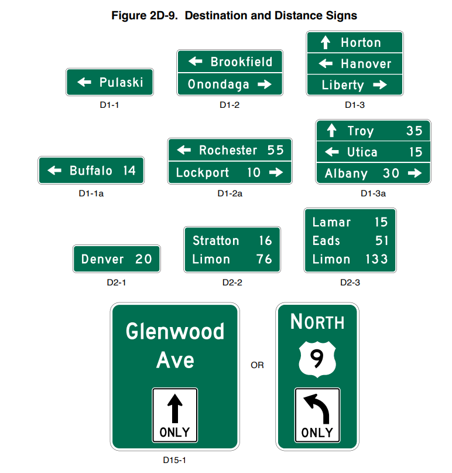
The MUTCD defines nine types of traffic signals:
* Pedestrian signals
* Emergency vehicle traffic control signals
* Traffic control signals for one-lane, two-way facilities
* Traffic control signals for freeway entrance ramps
* Traffic control signals for movable bridges
* Lane-use control signals
* Flashing beacons
* In-roadway lights
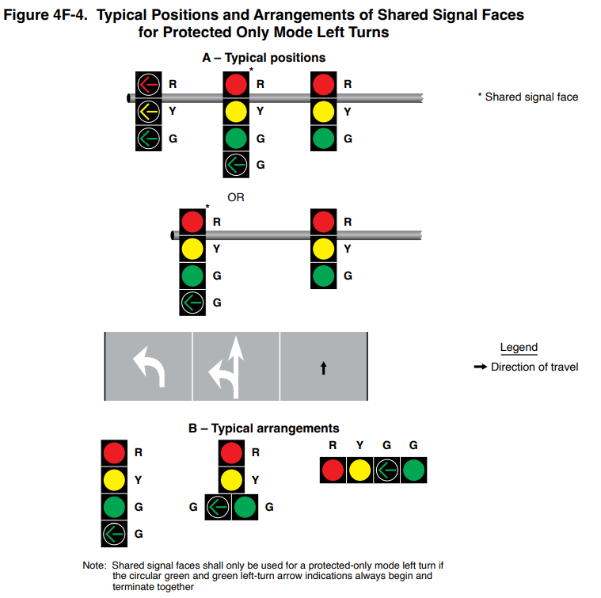
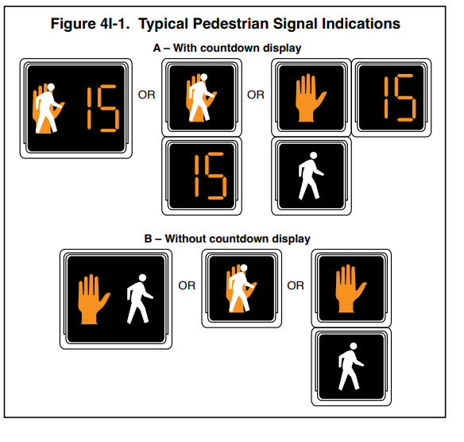
ECIV 542